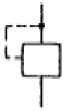
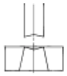
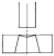
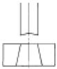
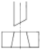
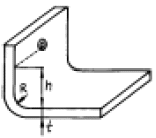
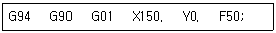
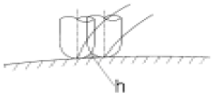
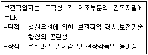

금형제작기능장 (2005-04-03 기출문제)
1과목: 임의 구분
1. 유압유의 첨가제로 볼 수 없는 것은 ?
- 산화방지제
- 방청제
- 점도지수 향상제
- 열방출 방지제
(정답률: 알수없음)

2. 유압펌프에서 송출압력을 P (kgf/cm2), 실제 송출량을 Q (cm3/sec)라고 할 때, 펌프동력 Lp(kW)의 식은 ?
- Lp = PQ /10200
- Lp = PQ /102
- Lp = PQ /7500
- Lp = PQ /75
(정답률: 알수없음)
3. 습기가 있는 압축공기를 건조하는 공기 건조기의 형식이 아닌 것은 ?
- 흡수식
- 원심식
- 흡착식
- 냉동식
(정답률: 알수없음)
4. 1공학 기압은 몇 mAq인가 ?
- 1.0
- 735.5
- 10.0
- 760
(정답률: 알수없음)
5. 다음 그림은 무엇을 나타내는 기호인가 ?

- 외부 파일럿
- 직접 파일럿 조작
- 내부 파일럿
- 간접 파일럿 조작
(정답률: 알수없음)
6. 배빗 메탈(babbit metal) 이라고도 하며, 안티몬 및 구리의 함량이 많아짐에 따라 경도, 인장강도, 항압력이 증가하는 재료는?
- 켈밋
- 포금
- 화이트메탈
- 오일리스 베어링
(정답률: 알수없음)
7. 공장의 고압증기 파이프의 둘레를 광목과 석회의 혼합재로 피복한 가장 큰 이유는 무엇인가 ?
- 파이프 내의 내압이 높아 터질 우려가 있으므로
- 파이프의 녹스는 것을 방지할 목적으로
- 파이프 외면의 미관을 좋게하기 위해
- 파이프 내의 유체 온도를 보호하기 위하여
(정답률: 알수없음)
8. 7·3황동에 2%의 Fe와 소량의 Sn, Al을 첨가한 황동은?
- 알브랙(albrac)
- 네이벌 황동(naval brass)
- 두라나 메탈(durana metal)
- 델타 메탈(delta metal)
(정답률: 알수없음)
9. 다음 자동차 크랭크축의 표면 경화법으로 가장 적합한 것은 ?
- 불꽃 경화법
- 시안화법
- 질화법
- 침탄법
(정답률: 알수없음)
10. 구상흑연주철의 조직이 아닌 것은?
- 시멘타이트
- 페라이트
- 퍼얼라이트
- 마그네사이트
(정답률: 알수없음)
11. 공석강의 표준조직은 어느 것인가?
- 페라이트
- 펄라이트
- 시멘타이트
- 오스테나이트
(정답률: 알수없음)
12. 금형의 온도를 측정하는 데 사용하는 열전대 중에서 가장 높은 온도(綽)를 측정할 수 있는 것은?
- 구리 - 콘스탄탄
- 철 - 콘스탄탄
- 크로멜 - 알루멜
- 백금 - 백금로듐
(정답률: 알수없음)
13. 핀 포인트 게이트의 특징이 아닌 것은 ?
- 게이트의 위치 선정이 자유롭다.
- 압력 손실이 거의 없다.
- 게이트가 자동적으로 절단된다.
- 수축 및 변형을 적게 할 수 있다.
(정답률: 알수없음)
14. 일반적으로 사용되는 러너의 단면형상으로 적합하지 않는 것은?
- 삼각형
- 반원형
- 사다리꼴
- 평판형
(정답률: 알수없음)
15. 수지의 유동성이 나빠 성형품의 일부분이 성형되지 않는 현상은?
- 충전불량(short shot)
- 광택불량(flow mark)
- 흑줄(black streak)
- 면수축(sink mark)
(정답률: 알수없음)
16. 상온에서 금형치수가 100mm이고, 상온에서 어떤 수지의 성형품 치수가 99.8mm로 측정되었을 때 성형수축율은 몇 %인가?
- 0.1%
- 0.2%
- 1 %
- 2%
(정답률: 알수없음)
17. 다음 특수금형 중 캐비티 코어 분할형 금형의 특징들을 나열하였다. 옳지 않는 것은?
- 금형값이 싸다.
- 성형 사이클이 늦어진다.
- 고장이나 파손하기 쉽다.
- 보수에 시간과 비용이 많이 든다.
(정답률: 알수없음)
18. 플라스틱 재료는 용융상태에서 냉각 고화되는 과정중에 체적이 줄어드는 수축현상이 일반적으로 나타난다. 다음 중 성형수축율에 가장 적은 영향을 주는 요인은?
- 탄성회복에 의한 체적변화
- 경화 및 결정화에 의한 체적변화
- 분자배향의 완화에 의한 수축
- 금형재질의 수축에 의한 체적변화
(정답률: 알수없음)
19. 1회 숏(shot)의 최대량을 나타내는 값으로 형체력과 함께 성형기의 능력을 나타내는 것은?
- 성형면적
- 가소화능력
- 사출률
- 사출용량
(정답률: 알수없음)
20. 드로잉 금형에서 다음 중 어느 때에 비드를 설치하면 오히려 더 좋지 않은 결과가 나오게 되는가?
- 드로잉이 너무 잘 되어 재료가 과도히 소비될 때
- 드로잉 제품의 측벽에 주름이 생길 경우
- 드로잉 길이가 얕고 직경이 큰 드로잉 제품일 경우
- 클리어런스가 작아서 측벽 인장이 심한 경우
(정답률: 알수없음)
2과목: 임의 구분
21. 다음 프레스가공 중 압축가공에 속하지 않는 것은?
- 엠보싱
- 트리밍
- 코이닝
- 스웨이징
(정답률: 알수없음)
22. 콤파운드 금형에 대한 설명중 틀린 것은?
- 콤파운드 금형에서 블랭킹과 피어싱을 동시에 할 수 있다.
- 콤파운드 금형에서는 스톱핀이 필요 없다.
- 콤파운드 금형에서 피어싱 펀치는 상홀더에 있고, 블랭킹펀치는 하홀더에 고정되어 있다.
- 콤파운드 금형에서는 노크 아웃봉이 있다.
(정답률: 알수없음)
23. 피어싱(Piercing) 가공금형에 시어(Shear)각을 붙이려고 한다. 다음 중 어떤 모양이 가장 좋겠는가 ?




(정답률: 알수없음)
24. 벤딩가공시 휨이나 비틀림이 생긴다. 그 대책으로 가장 거리가 먼 것은?
- 벤딩 전개계산의 보정계수를 수정한다.
- 클리어런스를 균일하게 한다.
- 판두께 규격을 변경한다.
- 벤딩선상의 R을 크게 한다.
(정답률: 알수없음)
25. 4 mm 두께의 연강판을 블랭킹 하는데 50 ton의 힘이 든다고 한다. 펀치에 5 mm의 전단각을 둔 경우, 타발력은 몇 ton 인가? (단, 물리는 율은 0.56이다.)
- 22.40
- 20.16
- 42.40
- 40.16
(정답률: 알수없음)
26. 블랭킹 작업시 전단력을 작게 하려고 한다. 다음 중 가장 효과적인 방법은 어느 것인가 ?
- 다이에 시어각(shear angle)을 준다.
- 펀치와 다이의 틈새(clearance)를 작게 한다.
- 프레스의 가공속도를 빨리 한다.
- 펀치와 다이의 모서리를 날카롭게 한다.
(정답률: 알수없음)
27. 다음 그림에서 ø5 mm 의 구멍을 먼저 가공한 후 굽힘을 하려고 한다. 구멍의 변형을 일으키지 않고 가공할 수 있는 높이 h의 최소값은? (단, 재료두께 t= 2.4 mm, 최소굽힘 반경 R = 2 mm이다.)

- 7.6mm
- 4.5mm
- 5.6mm
- 6.9mm
(정답률: 알수없음)
28. 동전이나 메달 등의 앞·뒤쪽 표면에 모양을 만드는 가공법은?
- 엠보싱
- 스웨이징
- 컵핑
- 코이닝
(정답률: 알수없음)
29. 초음파 가공의 특징으로 틀린 것은?
- 가공 후 변형이 거의 없다.
- 공구 이외는 마모 부품이 없다.
- 조작이 힘들지만 작업이 쉽다.
- 취성재도 가공할 수 있다.
(정답률: 알수없음)
30. 블랭킹과 피어싱을 한 공정으로 하도록 공정에 필요한 형을 한 개의 금형에 조합하여 상형에 외경 타발 다이와 구멍뚫기 펀치를 갖추고 하형의 펀치는 구멍 뚫기를 할 수 있도록 되어있는 다이는?
- 연속 커팅 다이
- 복식 트리밍 다이
- 다열 트리밍 다이
- 구멍 뚫기 다이
(정답률: 알수없음)
31. 유리, 보석, 초경합금, 전기도체, 부도체의 가공을 할 수 있는 가공법은?
- 콜드 호빙
- 초음파 가공
- 방전 가공
- 전해 가공
(정답률: 알수없음)
32. 다음 중 순간적인 액체의 압력을 이용하여 성형하며 굴곡이 심하거나 둥근 모형 등에 적합한 소성가공법은?
- 하이드로 펀치법(hydro punching)
- 액압성형법 (hydro forming)
- 냉간단조법(cold forming)
- 폭발성형법(explosive forming)
(정답률: 알수없음)
33. 고속 액체 제트 가공법으로 가공 할 수 없는 것은?
- 금속의 절단
- 금속의 용접
- 암석의 천공
- 목재나 천의 절단
(정답률: 알수없음)
34. 사출 성형품 설계를 하는 목적이 아닌 것은?
- 양호한 품질
- 성형능률 향상
- 금형제작 용이
- 금형수명 연장
(정답률: 알수없음)
35. 다음 지그에 대한 설명 중 틀린 것은?
- 지그 설계자는 현장 작업에 능통해야 한다.
- 지그본체의 모서리에는 반드시 모떼기, 둥글기를 붙여야 한다.
- 지그의 밑면과 테이블(Table)과의 접촉면적은 되도록 많게 한다.
- 지그는 칩(chip)의 배출구가 고려되어야 한다.
(정답률: 알수없음)
36. 드릴 부시의 종류에 해당되지 않는 것은 ?
- 회전형삽입부시
- 고정부시
- 라이너부시
- 코터부시
(정답률: 알수없음)
37. 드릴 지그를 구성하는 3대 요소가 아닌 것은 ?
- 위치 결정
- 기준면
- 체결
- 공구의 안내
(정답률: 알수없음)
38. 공작물을 고정하는 힘을 가하는 원칙으로서 가장 적합하지 않은 것은 ?
- 상대위치 결정구에 직접 가할 것
- 견고하지 않은 공작물에는 여러개의 작은 힘으로 나누어 가할 것
- 절삭력의 맞은 편에 가할 것
- 휨이 발생될 경우, 별도의 지지구 사용을 고려할 것
(정답률: 알수없음)
39. 지그 및 고정구의 사용목적으로 틀린 것은 ?
- 가공물의 가공시간을 단축시켜 저렴한 가격으로 제품을 얻을 수 있다.
- 미숙련자에 의한 작업이 가능하다.
- 가공중 제품의 변형을 최대한 방지할 수 있다.
- 상대적으로 일정요구를 만족시키므로 호환성이 결여되는 제품을 얻는다.
(정답률: 알수없음)
40. 다음 각도 측정기 중 오토 콜리메터와 함께 원주눈금원판(Circular table)의 검교정에 주로 사용되는 측정기는?
- 폴리곤(Polygon)
- 펜타프리즘(Penta prism)
- 각도 측정기
- 요한슨식(Johanson type) 각도게이지
(정답률: 알수없음)
3과목: 임의 구분
41. 최대 측정길이 175mm의 마이크로 미터를 사용할 때 기준봉의 허용치수는 ±3μm이고 마이크로 미터의 종합 오차는 ±4μm 이다. 기준봉을 사용하여 영점을 조정할 때 일어날 수 있는 최대 오차는 ?
- ±7μm
- ±12μm
- ±11μm
- ±5μm
(정답률: 알수없음)
42. 광파간섭 현상을 이용한 측정기는 ?
- 공구현미경
- 오토콜리메이터
- 옵티컬플랫
- NF식 표면거칠기 측정기
(정답률: 알수없음)
43. 윤곽 곡선을 측정하는데 가장 적합한 게이지(gauge)는?
- 옵티미터(optimeter)
- 단면측정기
- 투영기
- 오토 콜리메이터
(정답률: 알수없음)
44. 기준 피치원 직경 250mm, 모듈 4인 기어를 대량 생산하고있다. 이를 현장 공정에서 종합오차를 검사하기 위한 가장 적합한 측정방법은 어느 것인가 ?
- 투영기에 의한 차트 일치법
- 기초 원판식 치형 시험기에 의한 검사
- 이두께 마이크로미터에 의한 측정법
- 기어 맞물림 시험기에 의한 검사
(정답률: 알수없음)
45. 다음 중 평판 디스플레이의 종류가 아닌 것은?
- 플라즈마 가스 방출형(plasma-gas discharge)
- 래스터 스캔형(raster scan)
- 액정형(TFT-LCD)
- 전자 발광형(electro-luminescent)
(정답률: 알수없음)
46. 아래와 같은 머시닝센터 프로그램에서 현재 공구가 프로그램 원점에 위치해 있을 때 공구가 지령된 위치까지 도달하는 시간은? (단, 스핀들의 회전수는 120rpm 이다.)

- 3초
- 3분
- 1.5초
- 1.5분
(정답률: 알수없음)
47. 볼(Ball) 엔드밀로 곡면을 가공하면 가공경로 사이에 그림에서 보는 바와 같이 h부분에 공구의 흔적이 남는데 이것을 무엇이라 하는가?

- boolean
- cusp
- champer
- parameter
(정답률: 알수없음)
48. 고속가공기를 이용한 고속가공의 장점이 아닌 것은?
- Chip 처리가 용이하다.
- 난삭재 가공이 가능하다.
- One-setup 가공이 가능하다.
- Burr 생성이 증가한다.
(정답률: 알수없음)
49. CNC 선반의 주요 어드레스 종류 및 기능 중에서 휴지 기능으로 사용할 수 없는 어드레스는?
- P
- X
- Q
- U
(정답률: 알수없음)
50. 미리정해 놓은 시간적 순서에 따라 작업을 순차 제어하는 방식을 시퀀스 제어라 하는데, 이 시퀀스제어에 속하지 않는 것은?
- 엘리베이터
- 자동판매기
- 교통신호기
- 인공지능 로봇
(정답률: 알수없음)
51. 유접점 시퀀스제어가 무접점 자동제어 보다 장점에 속하는 것은?
- 동작속도가 빠르다.
- 고빈도 사용에도 수명이 길다.
- 열악한 환경에 잘 견딘다.
- 전기적 잡음에 대해 안정하다.
(정답률: 알수없음)
52. 다음 센서와 측정 가능한 물리량을 연결한 것이다. 이중 잘못 연결된 것은 ?
- 전동기의 회전속도 - 엔코더
- 물체의 변위 - 차동 변압기
- 회전각 - 리졸버
- 물체의 가속도 - 포토인터럽터
(정답률: 알수없음)
53. 정상운전에 앞서 자동화 시스템의 세부조정이나 모터의 회전방향을 확인하기 위한 회로는?
- 구동회로
- 한시운전회로
- 인칭회로
- 기동회로
(정답률: 알수없음)
54. 다음중 광센서의 특징이 아닌 것은?
- 비접촉식센서
- 고속응답
- 색상판별
- 단거리검출
(정답률: 알수없음)
55. 다음 내용은 설비보전조직에 대한 설명이다. 어떤 조직의 형태인가?

- 집중보전
- 지역보전
- 부문보전
- 절충보전
(정답률: 알수없음)
56. 수요예측 방법의 하나인 시계열분석에서 시계열적 변동에 해당되지 않는 것은?
- 추세변동
- 순환변동
- 계절변동
- 판매변동
(정답률: 알수없음)
57. 원재료가 제품화 되어가는 과정 즉 가공, 검사, 운반, 지연, 저장에 관한 정보를 수집하여 분석하고 검토를 행하는 것은?
- 사무공정 분석표
- 작업자공정 분석표
- 제품공정 분석표
- 연합작업 분석표
(정답률: 알수없음)
58. nP관리도에서 시료군마다 n=100 이고, 시료군의 수가 k=20 이며, ΣnP = 77이다. 이때 nP관리도의 관리상한선 UCL을 구하면 얼마인가?
- UCL = 8.94
- UCL = 3.85
- UCL = 5.77
- UCL = 9.62
(정답률: 알수없음)
59. 다음 중 검사를 판정의 대상에 의한 분류가 아닌 것은?
- 관리 샘플링검사
- 로트별 샘플링검사
- 전수검사
- 출하검사
(정답률: 알수없음)
60. 파레토그림에 대한 설명으로 가장 거리가 먼 내용은?
- 부적합품(불량), 클레임 등의 손실금액이나 퍼센트를 그 원인별, 상황별로 취해 그림의 왼쪽에서부터 오른쪽으로 비중이 작은 항목부터 큰 항목 순서로 나열한 그림이다.
- 현재의 중요 문제점을 객관적으로 발견할 수 있으므로 관리방침을 수립할 수 있다.
- 도수분포의 응용수법으로 중요한 문제점을 찾아내는 것으로서 현장에서 널리 사용된다.
- 파레토그림에서 나타난 1∼2개 부적합품(불량) 항목만 없애면 부적합품(불량)률은 크게 감소된다.
(정답률: 알수없음)